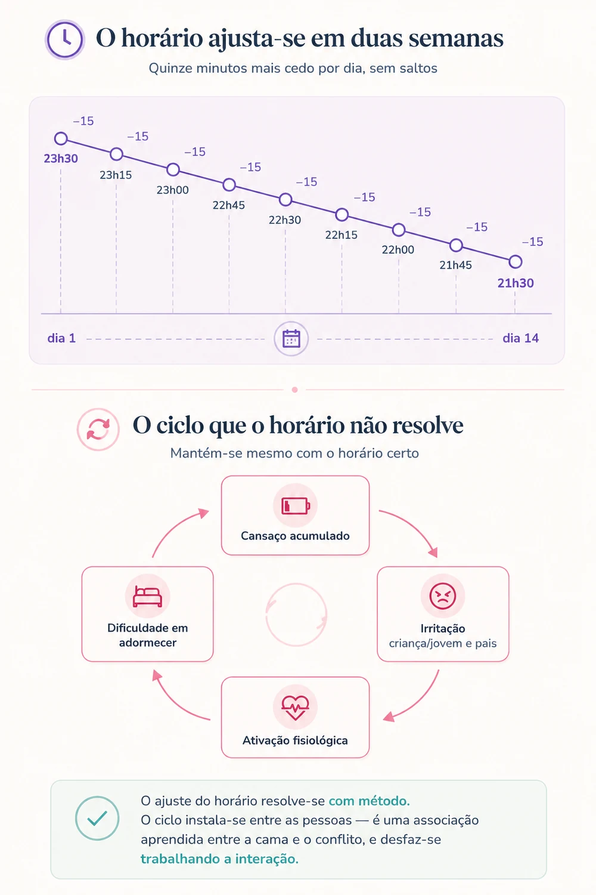

Retomar o sono antes do regresso às aulas
O horário ajusta-se em duas semanas. O que costuma demorar mais a mudar é o que acontece entre as pessoas na hora de deitar.
A situação
Em agosto, poucas famílias têm horários. Deita-se mais tarde porque está calor e ainda é dia, acorda-se mais tarde porque não há motivo para acordar, e ninguém pensa nisso como um problema — porque não é.
O problema aparece na primeira segunda-feira de aulas. A criança que em agosto adormecia à meia-noite tem agora de adormecer às nove e acordar às sete. E o que se instala nessas primeiras noites raramente é apenas uma questão de horas: é uma sequência de pedidos, adiamentos e negociações que deixa toda a gente pior do que estava.
Vale a pena separar duas coisas que costumam andar juntas. Uma é a que horas o corpo consegue adormecer. A outra é o que se passa entre a criança e os adultos enquanto se tenta que isso aconteça. A primeira resolve-se com tempo e regularidade. A segunda exige outra leitura.
O que se sabe
O relógio interno não se ajusta por decisão
A quantidade de sono necessária varia com a idade. A Academia Americana de Medicina do Sono, depois de rever oitocentos e sessenta e quatro estudos, recomenda dez a treze horas dos 3 aos 5 anos, nove a doze horas dos 6 aos 12, e oito a dez horas dos 13 aos 18. Dormir regularmente menos associa-se a dificuldades de atenção, de comportamento e de aprendizagem — precisamente o que a escola vai exigir.
O sinal mais forte que o organismo usa para saber que horas são é a luz: a da manhã adianta o relógio, a da noite atrasa-o. Uma criança que passa a manhã com as persianas fechadas e a noite com ecrãs acesos recebe exatamente a informação contrária à de que precisa.
Na adolescência acresce uma alteração biológica: o relógio desloca-se naturalmente para mais tarde e a pressão de sono acumula-se mais devagar. Adormecer cedo torna-se genuinamente mais difícil. Isto importa dizer com clareza, porque a leitura habitual — preguiça, teimosia, falta de vontade — é errada e estraga a conversa antes de ela começar.
A resistência em deitar-se raramente é só resistência
É aqui que a leitura psicológica se torna indispensável. Comportamentos parecidos têm origens diferentes, e o que se faz depende de qual delas está em causa.
A literatura sobre dificuldades de sono na infância distingue, em traços gerais, dois padrões. Num, a criança depende de determinadas condições para adormecer — a presença do adulto, um contexto específico — e, na ausência delas, o adormecer atrasa-se ou o despertar noturno torna-se difícil de resolver. Noutro, o problema situa-se na consistência dos limites: o adiar sucessivo encontra sempre alguma resposta, e essa resposta mantém o ciclo.
Mas há mais do que isto, e nem tudo cabe nessas duas categorias. A hora de deitar é, para muitas crianças, o momento em que ficam sozinhas com aquilo em que não pensaram durante o dia — a preocupação com a escola, um conflito com um amigo, um medo. E é frequentemente o único momento em que têm o adulto disponível só para si. O adiamento pode ser, ao mesmo tempo, evitamento do que incomoda e procura de proximidade.
Antes de mudar o que se faz, vale a pena perceber o que a criança está a resolver com aquele comportamento. Adiar por medo, por preocupação ou por querer companhia pede respostas diferentes.

O ciclo que se instala entre os dois
O deitar é dos momentos do dia em que os adultos estão mais cansados e com menos tolerância disponível. A criança percebe-o. Instala-se então uma sequência conhecida: quanto mais ela adia, mais o adulto se irrita; quanto mais tenso fica o momento, mais ativada ela fica; e quanto mais ativada, menos condições tem para adormecer. O esforço para acelerar o processo é precisamente o que o atrasa.
Há ainda um efeito de aprendizagem a considerar. Se a cama passa a ser o sítio onde se discute, se insiste e se fica frustrado, deixa progressivamente de funcionar como sinal de sono e passa a funcionar como sinal de conflito. Esta associação constrói-se ao longo de semanas — e desfaz-se da mesma maneira.
As intervenções que funcionam nesta área são, na sua maioria, intervenções com os pais, não com a criança. Trabalham a previsibilidade da rotina, a consistência entre os adultos da casa e a forma como se responde aos pedidos noturnos. Os estudos de acompanhamento mostram melhorias mantidas ao longo de meses.
O que fazer
Começar duas a três semanas antes do primeiro dia de aulas. Se faltar menos tempo, começar na mesma.
Antecipar quinze minutos de cada vez. Cada dois ou três dias, deitar e acordar um pouco mais cedo, até chegar ao horário de setembro. Saltos grandes falham porque a criança fica na cama sem sono — e é assim que a cama se torna um sítio de frustração.
Fixar a hora de acordar antes da hora de deitar. É contraintuitivo, mas é a hora de acordar que arrasta o resto. Quem acorda mais cedo tem sono mais cedo; quem se deita cedo sem ter acordado cedo fica simplesmente deitado, acordado.
Abrir tudo logo de manhã, e sair. Persianas abertas ao acordar e, sempre que possível, trinta minutos na rua durante a manhã. A luz natural, mesmo em dia nublado, é muito mais intensa do que qualquer luz de interior. É o gesto de maior efeito e o mais fácil de fazer.
Construir uma rotina curta, previsível e sempre igual. Três ou quatro passos, pela mesma ordem, com uma duração conhecida. A previsibilidade faz o trabalho que a insistência não faz: a criança sabe o que vem a seguir e não precisa de negociar cada passo. Convém que a rotina termine no quarto, e não que se desloque pela casa.
Dar antes o que costuma ser pedido depois. Se os pedidos noturnos são de água, de companhia ou de mais uma conversa, incluí-los na rotina retira-lhes a função de adiamento. Um tempo curto de conversa, todas as noites, à mesma hora, resolve mais do que a mesma conversa arrancada à custa de insistência.
Manter o mesmo critério entre os adultos da casa. Quando um cede e o outro não, a criança não aprende a regra — aprende a esperar por quem cede. Isto vale também entre casas, quando os pais estão separados.
Separar a conversa difícil do momento de deitar. Se há uma preocupação a tratar, é melhor tratá-la mais cedo, noutro momento do dia. À hora de deitar, uma criança preocupada precisa de tranquilização breve, não de resolução do problema.
Com adolescentes, negociar em vez de impor. Um horário imposto aos quinze anos não pega. Explicar que a dificuldade em adormecer cedo tem base biológica — e que por isso a estratégia é a luz da manhã e a regularidade, não a força de vontade — muda a conversa de um braço de ferro para um problema partilhado.
Manter o horário ao fim de semana, com margem de uma hora. Dormir até tarde ao sábado desfaz em duas manhãs o que se construiu durante a semana.
Quando procurar ajuda
O ajuste gradual resolve a maioria das situações. Há, no entanto, sinais que justificam avaliação em vez de mais tentativas em casa:
- A criança demora sistematicamente mais de trinta a quarenta e cinco minutos a adormecer, mesmo com horário ajustado e rotina consistente.
- Ressona de forma audível e regular, respira pela boca, ou tem pausas na respiração durante o sono.
- Mantém sonolência acentuada durante o dia apesar de dormir as horas recomendadas.
- A resistência em deitar-se surge acompanhada de medo intenso, ansiedade de separação marcada ou sofrimento evidente.
- A dificuldade de sono coexiste com alterações de humor, irritabilidade persistente ou perda de interesse em atividades habituais.
- O padrão mudou de forma abrupta, sem alteração de rotina que o explique — o que pode sinalizar algo que a criança não está a conseguir dizer.
- O conflito noturno atingiu um ponto em que está a afetar a relação, ou o esgotamento dos adultos é já parte do problema.
Vale a pena levar registo escrito de duas a três semanas — hora de deitar, tempo até adormecer, despertares, hora de acordar, e o que aconteceu antes das noites piores. É esse registo que torna o padrão visível, e ele nem sempre corresponde à impressão que a família tem.
Registo de sono — três semanas
Grelha semanal para registar hora de deitar, tempo até adormecer, despertares e hora de acordar, com exemplo de preenchimento. É este o registo a levar à consulta.
Este texto tem fins informativos e não substitui avaliação nem acompanhamento profissional. Cada situação exige uma leitura própria.
Referências
- Mindell, J. A., Kuhn, B., Lewin, D. S., Meltzer, L. J., & Sadeh, A. (2006). Behavioral treatment of bedtime problems and night wakings in infants and young children. Sleep, 29(10), 1263–1276.
- Paruthi, S., Brooks, L. J., D’Ambrosio, C., Hall, W. A., Kotagal, S., Lloyd, R. M., Malow, B. A., Maski, K., Nichols, C., Quan, S. F., Rosen, C. L., Troester, M. M., & Wise, M. S. (2016). Consensus statement of the American Academy of Sleep Medicine on the recommended amount of sleep for healthy children: Methodology and discussion. Journal of Clinical Sleep Medicine, 12(11), 1549–1561. https://doi.org/10.5664/jcsm.6288
- Paruthi, S., Brooks, L. J., D’Ambrosio, C., Hall, W. A., Kotagal, S., Lloyd, R. M., Malow, B. A., Maski, K., Nichols, C., Quan, S. F., Rosen, C. L., Troester, M. M., & Wise, M. S. (2016). Recommended amount of sleep for pediatric populations: A consensus statement of the American Academy of Sleep Medicine. Journal of Clinical Sleep Medicine, 12(6), 785–786. https://doi.org/10.5664/jcsm.5866
A descrição do avanço gradual de fase circadiana e do efeito da luz matinal apoia-se em literatura sobre cronobiologia do sono na adolescência, aqui referida de forma genérica por se tratar de um corpo de estudos e não de um trabalho isolado.